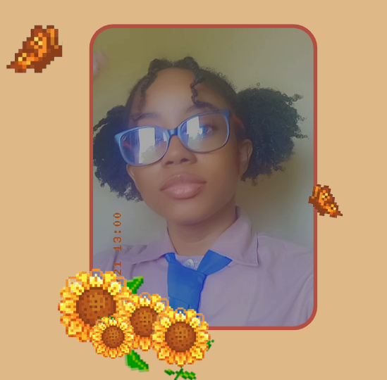

About Me
|
 Home
Home
|
 About
About
|
 Development
Development
|
 Professional
Professional
|
References |
|---|
Who Am I?Hello! I'm Britney Vassell, a second year university student at the University of Technology, Jamaica. Currently, I am studying Computer Science in hopes to get my degree. Programming has always been something I have been passionate bout since I first experienced it in high school. This lead me to join clubs such as the Robotics club where I fell in love with coding all over again. I'm also very strict about school and learning. I love organizing and creating things so they're completed in the most efficient way possible. In terms of personality, some describe me as too kind, smart, miserable or what young people refer to as a "menace", which is simply someone who is mischievous. Though in all honesty, just as the vast majority alter their personality based on the people they are around, I do just the same. So not everyone will see me from the same angle. You too can come at your own conclusion based on the contents of this page (: |
 |
Get to Know Me!
Growing up, my dad always told me to Passion: Games
They're so many things I am passionate about, but the most important are playing games, coding and spending time with my friends.
Games are really the most dominant of the three. I mostly play Genshin
Impact, which is an open-world action role playing game (RPG). It was one of my very first RPGs and I fell in love with it immediately. It
is one of the very popular gacha games out right now, so getting new characters and weapons and building them is fun but tedious since it
requires alot of free time. Genshin does have some in-game purchases to make the resource collection easier, but I don't have any money to
pay for them. So, I play every single day to complete my daily missions so I can get some resources from them. |
Apex Legends is also very high on my list of favorite games. It is a free-to-play hero shooter game. My favorite hero, formerly known as "legend", in the game is Wattson. I love everything about her, from her looks to abilities and even her voicelines. She uses electric fences to fight and can regenerate the health of players. I look forward to playing Apex every time just to play with her. In addition to these, I also play Brawlhalla , and Tower of Fantasy. If you already know of these games, you'll realize that they're all only multiplayer games, which is a must in a game for me. I prefer playing games with my friends rather than by myself, because I love spending time with my friends alot.
MusicMusic has always been one of the first things I'd turn to for help when I'm emotionally unstable or stressed. I've made many playlists on Spotify, each for a different emotion I feel. It not only helps me to think more clearly, but helps me with expressing myself. It gets a load off my shoulders and makes me feel at peace regardless of the genre. As of right now, I mostly listen to Japanese pop music, Hip Hop, Rhythm and blues, Soft rock and Country pop. My father was the one who introduced me to the latter two and I instantly fell in love with them. My favorite bands consist of Air supply and singer, Kenny Rogers. Though you might not be able to listen to them all, feel free to listen to some of my playlists in your free time! |
|
Coding
I started coding in grade 10 for my Caribbean Secondary Education Certificate (CSEC) examination. My first language was pascal. It was very easy so I loved doing it. Though, when we moved to coding in C in around sixth form the difficulty level took a turn for the worst. It took more brain power and critical thinking to analyze problems and create a program to solve them accordingly. It took mee a while to get the hang of it, but even though it was really difficult I fell in love with it even more. It was then I decided that I wanted to learn to code more and study Computer Science in university. In my two years at university I've learned Python, C and SQL, and I am currently learning HTML 5, C++, Java and JavaScript. I've never been happier. The days are rough, and there are times when I think I might cry because a problem has me in a bind, but it's those hard times that increase my love for coding. Nothing beats the feeling of creating something from scratch on your own and watching it execute as planned. I look forward to the new things I'll learn throughout the duration of my time at university and I especially hope that learning Web Programming won't disappoint.
Personality Test!
Through a personality test from Keirsey Temperament Sorter, I received the portrait of a Guardian.
|
This test was surprisingly very accurate. I keep track of all my assignments and responsibilities in an app called Notion because I hate when I'm being pressured by deadlines. I love being in leadership positions, though it might be because I don't trust the people I'm working with to lead me. All in all the test was very accurate in regards to my personality and preferences. |